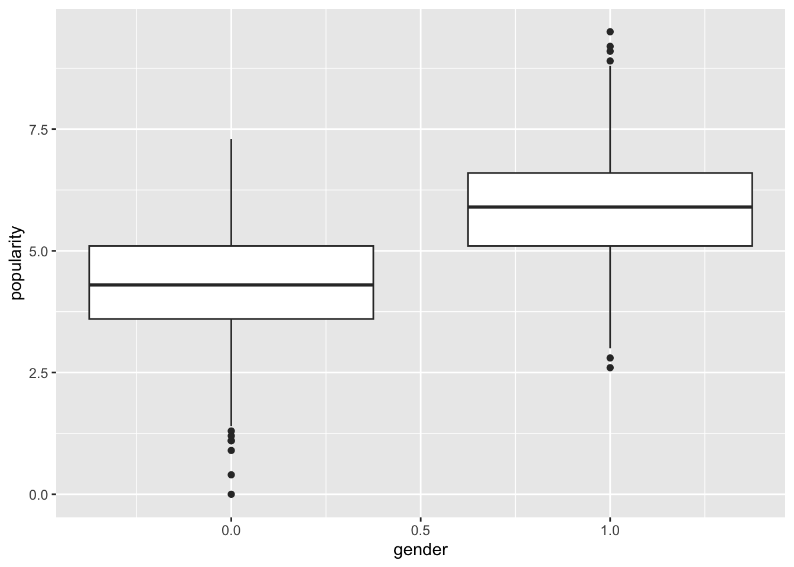

3 Multilevel Modelling Practical 2 (Week 3)
3.1 Instructions – start here!
The first part of this notebook (Exercise 1) reproduces the images displayed through the use of ggplot in Lecture 3 of this module. The code in this example is influenced by https://www.rensvandeschoot.com/tutorials/lme4/.
The second part of the notebook (Exercise 2) allows you to test your ggplot2 skills. If time permits, you may apply ggplot2 more freely onto another data set (Exercise 3).
We initially load two useful R packages (haven, ggplot2).
#You may need to install these packages!
require(haven) # to load the SPSS .sav file
require(ggplot2) # used for production of graphsIf you don’t have the above packages, you will need to use the usual install.packages() and library() for both.
3.2 Exercises 1
3.2.1 Acquire and prepare data
Use the code below to reproduce the images from the lecture. Please do not just click your way through: try to understand and appreciate what the code does in all instances, and try to execute minor modifications of the code to observe the effect.
The following command is reading the data in directly from Andy’s Github page.
\(~\)
We extract the relevant columns, relabel accordingly, and display the first six rows.
pop.data <- pop.rawdata[,c("pupil", "class", "extrav", "sex", "texp", "popular")]
colnames(pop.data)<- c("pupil", "class", "extraversion", "gender", "experience", "popularity")
head(pop.data) # we have a look at the first 6 observations## # A tibble: 6 × 6
## pupil class extraversion gender experience popularity
## <dbl> <dbl> <dbl> <dbl+lbl> <dbl> <dbl>
## 1 1 1 5 1 [girl] 24 6.3
## 2 2 1 7 0 [boy] 24 4.9
## 3 3 1 4 1 [girl] 24 5.3
## 4 4 1 3 1 [girl] 24 4.7
## 5 5 1 5 1 [girl] 24 6
## 6 6 1 4 0 [boy] 24 4.7The following creates some auxiliary data frames, purely for visualization purpopses.
3.2.2 Exploratory analysis
Produce a histogram of the response variable.
TASK: Try col="black", fill="light blue" inside geom_histogram().
\(~\)
Visualise the explanatory variables as follows.
TASK: What does stat="identity" do? Check the help file via ?geom_bar.
\(~\)
Scatterplot of popularity against extraversion and Pearson correlation:
## [1] 0.3157935TASK: What does size and alpha do in geom_point()?
\(~\)
Scatterplot of popularity against gender and Pearson correlation:

## [1] 0.5682754ggplot(data = pop.data,
aes(x = extraversion, y = popularity, colour = as.factor(gender))
) +
geom_point(size = 1, alpha = .7, position = "jitter")Let’s calculate the mean popularity and mean teacher experience score within each class and store in a data frame. Although no actual averaging takes place when calculating the teacher experience means, the code is useful for the extraction of the class level variable.
pop.means <- tapply(pop.data$popularity, pop.data$class, mean)
# average popularity per class
exp.means <- tapply(pop.data$experience, pop.data$class, mean)
# extracting the upper-level variable teaching experience
# (no actual averaging takes place here, as experience is constant within classes)
class.level<- data.frame(pop.means=pop.means, exp.means=exp.means)
# Plot mean popularity per class against teacher experience
ggplot(data = class.level, aes(x=exp.means, y= pop.means)) +
geom_point(size=2) +
labs(y="mean popularity per class") +
labs(x="teacher experience")Task: make clear to yourself the use of tapply() here.
\(~\)
3.2.3 Naive simple linear regression models
Let’s fit a single regression model to all data. The model takes the form \[ y_{ij}=a + b x_{ij}+ \epsilon_{ij}, \quad \epsilon_{ij}\sim N(0,\sigma^2), \quad i=1,\ldots,n_j,\quad j=1,\ldots,100. \] We fit the model and extract estimates of \(a\) and \(b\) as follows.
simple.linear.model<- lm(popularity ~ extraversion, data=pop.data)
summary(simple.linear.model)$coef## Estimate Std. Error t value Pr(>|t|)
## (Intercept) 3.2728356 0.12473523 26.23826 1.237371e-130
## extraversion 0.3458513 0.02324748 14.87694 1.481801e-47Plot the data and overlay the fitted regression line:
ggplot(data = pop.data, aes(x = extraversion, y = popularity)) +
geom_point(size=0.7)+
geom_smooth(method = lm, # to add regression line
se = TRUE, col = "red", size = 1, alpha = .8)## `geom_smooth()` using formula = 'y ~ x'Let’s produce a scatterplot with jitter, colour by class:
ggplot(data = pop.data, aes(x = extraversion, y = popularity, col=class)) +
geom_jitter(size=0.8) + # to add some random noise for plotting purposes
scale_color_gradientn(colours = rainbow(100)) #+Does one line fit all? We now fit a separate model for each class. The models take the form (for each class \(j\)) \[ y_{ij}=a_j+b_j x_{ij}+\epsilon_{ij}, \quad \epsilon_{ij}\sim N(0,\sigma^2_j). \]
ggplot(data = pop.data,
aes(x = extraversion,y = popularity, colour = class, group = class)
) +
geom_jitter(size=0.8) +
geom_smooth(method = lm, se = FALSE, size = .5, alpha = .8) +
scale_color_gradientn(colours = rainbow(100))We can extract the estimates of \(a_j\) and \(b_j\) via a for loop:
fit.all <- matrix(NA, 100,2) #one row for each class, cols are a and b
for (j in 1:100){ #loop over classes
fit.all[j,]<-lm(popularity~extraversion, data=pop.data, subset=pop.data$class==j)$coef
}
colnames(fit.all) <- c("intercept", "slope")
fit.all <- as.data.frame(fit.all)Finally, plot histograms of the \(a_j\) and \(b_j\) estimates:
ggplot(data=fit.all, aes(intercept)) +
geom_histogram(bins=15) + geom_vline(xintercept=a, linetype="dashed", color = "red")ggplot(data=fit.all, aes(slope)) +
geom_histogram(bins=15) + geom_vline(xintercept=b, linetype="dashed", color = "red")TASK (harder): suppose that we model the intercepts via \(a_j = a +u_{j}\) where \(u_j\sim N(0,\sigma^2_u)\) independently of all other random variables. Write down the resulting model in the form \(y_{ij}= \ldots\). Is this likely to be a sensible model? What exploratory techniques can we use to answer his question? Discuss with colleagues and/or Andy.
For two pupils in the same class, what is the covariance between response values? What is the covariance between the response values of two pupils from different classes? How might we model the \(b_j\)?
(Don’t worry if this looks a bit odd - we will unpack in next week’s lecture!)
\(~\)
3.3 Exercise 2
Load the mpg data in the ggplot2 package to obtain a data set on fuel efficiency.
Look at the help file to see the variables available (note: ?ggplot2::mpg). You’ll need to map the plots requested below to the correct variable from the documentation.
- Produce a scatter plot of the fuel efficiency on a highway (motorway, variable name
hwy) against the engine’s size (aka displacementdispl).

- There are a few vehicles with large engines that have unusually high fuel efficiency for such big engines. Colour the points by the type of car (the
classvariable). Can you explain these cars?
Click for solution

- Now remove the colouring but split the plot into facets where you have a graphic per car type. (Use
facet_wrap()withclass.)
Click for solution

- Add to this collection of plots the fuel efficiency for city driving, coloured in red. Update the y-axis to be called “Fuel efficiency” to reflect that it is not only the hwy variable plotted now.
Click for solution
# sub part 3
ggplot(mpg, aes(x = displ, y = hwy)) +
facet_wrap(~ class) +
geom_point() +
geom_point(aes(y = cty), colour = "red")+
ylab("Fuel efficiency")y mapping with the cty
variable, and putting the colour argument outside the aesthetic because it applies to all these points and is not data dependent.
- Write the code to produce a scatterplot of highway fuel efficiency
hwyagainst displacementdisplcoloured by drive typedrv(front, rear, four). Overlay fitted regression lines coloured by drive type. Finally, overlay a single regression line, coloured black, based on all data.
Click for solution
# 2.
ggplot(mpg, aes(x = displ, y = hwy)) +
geom_point(aes(colour = drv)) +
geom_smooth(aes(colour = drv), method=lm) +
geom_smooth(method=lm, colour = "black")When producing this plot we need to remember the rules ggplot2 uses. We can’t put the colour in the ggplot() plot creation call, because then it will apply to all geoms (and we need the black smoother not to be split by drive train).
x and y in the ggplot() call, add the points with the additional colour aesthetic, add a regression fit with the colour in an aesthetic so that we get a regression line per drive type, then add the black regression line with the colour not specified as an aesthetic because it applies to all the data (instead, just a direct argument).
- Produce a bar plot of the count of the number of each type of vehicle (
class) in the data by using the Geomgeom_bar(), with aestheticxset to the vehicle type (NB: this question is to help you check if you are starting to understand the plotting system, because even though we didn’t show an example of a bar plot, this sentence alone should be enough information without needing to look at the documentation. The plotting system follows a coherent set of rules for all plot types!)

- Make a second version where you also add an aesthetic
fillwhich is set to the variabledrv. What is this showing?
Click for solution

\(~\)
3.4 Exercise 3 (if time)
The data used here represent Maths achievement scores of a subsample of subjects from the 1982 High School and Beyond Survey. The full dataset can be found within the package merTools. Click the link to read about the data set.
The analysis starts by introducing the data and producing some visual representations.
Read in the data from Andy’s Github page with
Carry out the following operations for simple access of variables.
data <- sub_hsb
mathach <- data$mathach # Maths achievement score (response)
ses <- data$ses
female <- data$female
school.f <- as.factor(data$schid)Data inspection:
## schid minority female ses mathach size schtype meanses
## 1 1224 0 1 -1.528 5.876 842 0 -0.428
## 2 1224 0 1 -0.588 19.708 842 0 -0.428
## 3 1224 0 0 -0.528 20.349 842 0 -0.428
## 4 1224 0 0 -0.668 8.781 842 0 -0.428
## 5 1224 0 0 -0.158 17.898 842 0 -0.428
## 6 1224 0 0 0.022 4.583 842 0 -0.428Start with a linear regression as a baseline model.
##
## Call:
## lm(formula = mathach ~ ses, data = data)
##
## Residuals:
## Min 1Q Median 3Q Max
## -18.0019 -4.6006 0.0497 5.2174 16.0877
##
## Coefficients:
## Estimate Std. Error t value Pr(>|t|)
## (Intercept) 12.8864 0.1753 73.51 <2e-16 ***
## ses 3.4530 0.2222 15.54 <2e-16 ***
## ---
## Signif. codes: 0 '***' 0.001 '**' 0.01 '*' 0.05 '.' 0.1 ' ' 1
##
## Residual standard error: 6.39 on 1327 degrees of freedom
## Multiple R-squared: 0.1539, Adjusted R-squared: 0.1533
## F-statistic: 241.5 on 1 and 1327 DF, p-value: < 2.2e-16Visualise the linear relationship.
ggplot(data = data, aes(x = ses, y = mathach))+
geom_point(size = 0.8, alpha = .8)+
geom_smooth(method="lm", se=FALSE, col="Red")+
ggtitle("Mathach vs. Ses") +
xlab("Ses") +
ylab("Mathach")Carry out further exploratory analysis of the data along the lines of the previous example.
End of lab!